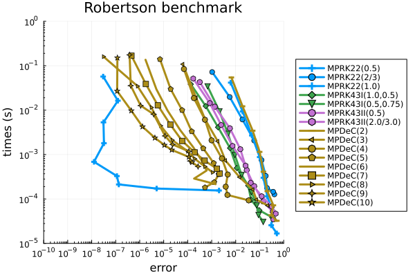
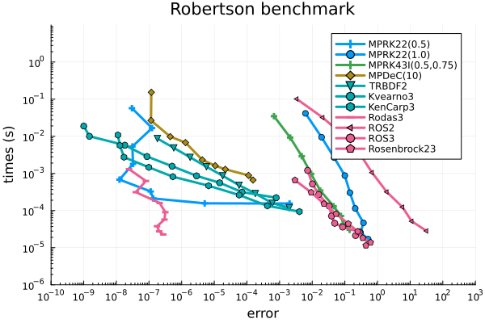
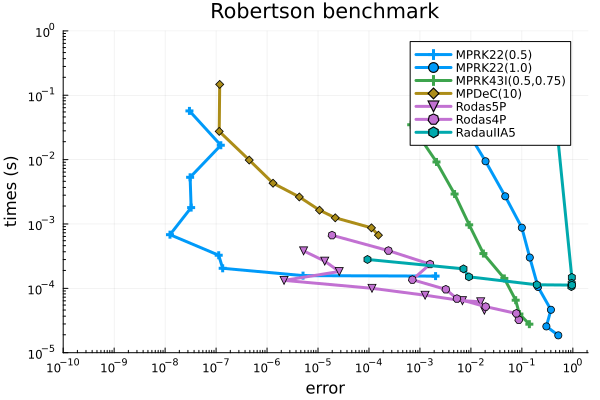
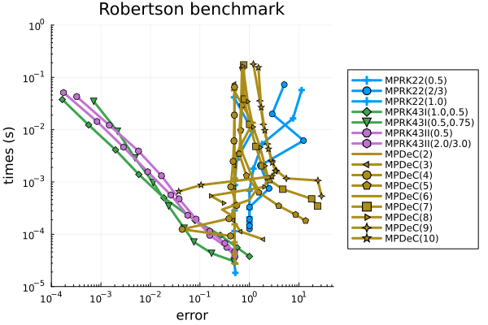
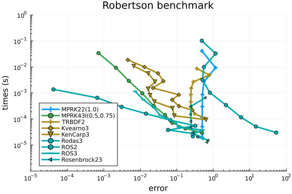
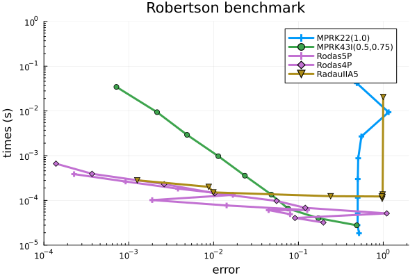

Benchmark: Solution of the Robertson problem
Here we use the stiff Robertson problem prob_pds_robertson to assess the efficiency of different solvers from OrdinaryDiffEq.jl and PositiveIntegrators.jl.
using OrdinaryDiffEqFIRK, OrdinaryDiffEqRosenbrock, OrdinaryDiffEqSDIRKusing PositiveIntegrators# select Robertson problemprob = prob_pds_robertsonTo keep the following code as clear as possible, we define a helper function robertson_plot that we use for plotting.
using Plotsfunction robertson_plot(sol, sol_ref = nothing, title = "") colors = palette(:default)[1:3]' if !isnothing(sol_ref) p = plot(sol_ref, tspan = (1e-6, 1e11), xaxis = :log, idxs = [(0, 1), ((x, y) -> (x, 1e4 .* y), 0, 2), (0, 3)], linestyle = :dash, label = "", color = colors, linewidth = 2) plot!(p, sol; tspan = (1e-6, 1e11), xaxis = :log, denseplot = false, markers = :circle, ylims = (-0.2, 1.2), idxs = [(0, 1), ((x, y) -> (x, 1e4 .* y), 0, 2), (0, 3)], title, xticks = 10.0 .^ (-6:4:10), color = colors, linewidht = 2, legend = :right, label = ["u₁" "10⁴ u₂" "u₃"]) else p = plot(sol; tspan = (1e-6, 1e11), xaxis = :log, denseplot = false, markers = :circle, ylims = (-0.2, 1.2), idxs = [(0, 1), ((x, y) -> (x, 1e4 .* y), 0, 2), (0, 3)], title, xticks = 10.0 .^ (-6:4:10), color = colors, linewidht = 2, legend = :right, label = ["u₁" "10⁴ u₂" "u₃"]) end return pendFor this stiff problem the computation of negative approximations may lead to inaccurate solutions. This typically occurs when adaptive time stepping uses loose tolerances.
# compute reference solution for plottingref_sol = solve(prob, Rodas4P(); abstol = 1e-14, reltol = 1e-13);# compute solutions with loose tolerancesabstol = 1e-2reltol = 1e-1sol_Ros23 = solve(prob, Rosenbrock23(); abstol, reltol);sol_MPRK = solve(prob, MPRK22(1.0); abstol, reltol);# plot solutionsp1 = robertson_plot(sol_Ros23, ref_sol, "Rosenbrock23");p2 = robertson_plot(sol_MPRK, ref_sol, "MPRK22(1.0)");plot(p1, p2)
Nevertheless, OrdinaryDiffEq.jl provides the solver option isoutofdomain, which can be used in combination with isnegative to guarantee nonnegative solutions.
sol_Ros23 = solve(prob, Rosenbrock23(); abstol, reltol, isoutofdomain = isnegative) #reject negative solutionsrobertson_plot(sol_Ros23, ref_sol, "Rosenbrock23")
Work-Precision diagrams
In the following we show several work-precision diagrams, which compare different methods with respect to computing time and the respective error. We focus solely on adaptive methods, since the time interval $(0, 10^{11})$ is too large to generate accurate solutions with fixed step sizes.
Since the Robertson problem is stiff, we need to use a suited implicit scheme to compute a reference solution, see the solver guide. Note that we cannot use the recommended method radau(), since prob_pds_robertson uses StaticArrays.jl instead of standard Arrays.
# select solver to compute reference solutionalg_ref = Rodas4P()We use the functions work_precision_adaptive and work_precision_adaptive! to compute the data for the diagrams. Furthermore, the following absolute and relative tolerances are used.
# set absolute and relative tolerancesabstols = 1.0 ./ 10.0 .^ (2:1:10)reltols = abstols .* 10.0Relative maximum error at the final time
In this section the chosen error is the relative maximum error at the final time $t = 10^{11}$.
# select relative maximum error at the end of the problem's time span.compute_error = rel_max_error_tendWe start with a comparison of different adaptive MPRK schemes.
# choose methods to comparealgs = [MPRK22(0.5); MPRK22(2.0 / 3.0); MPRK22(1.0); MPRK43I(1.0, 0.5); MPRK43I(0.5, 0.75); MPRK43II(0.5); MPRK43II(2.0 / 3.0); MPDeC(2); MPDeC(3); MPDeC(4); MPDeC(5); MPDeC(6); MPDeC(7); MPDeC(8); MPDeC(9); MPDeC(10)]labels = ["MPRK22(0.5)"; "MPRK22(2/3)"; "MPRK22(1.0)"; "MPRK43I(1.0,0.5)"; "MPRK43I(0.5,0.75)"; "MPRK43II(0.5)"; "MPRK43II(2.0/3.0)"; "MPDeC(2)"; "MPDeC(3)"; "MPDeC(4)"; "MPDeC(5)"; "MPDeC(6)"; "MPDeC(7)"; "MPDeC(8)"; "MPDeC(9)"; "MPDeC(10)"]# compute work-precision datawp = work_precision_adaptive(prob, algs, labels, abstols, reltols, alg_ref; adaptive_ref = true, compute_error)# plot work-precision diagramplot(wp, labels; title = "Robertson benchmark", legend = :outerright, color = permutedims([repeat([1], 3)..., repeat([3], 2)..., repeat([4], 2)..., repeat([5], 9)...]), xlims = (10^-10, 10^0), xticks = 10.0 .^ (-10:1:0), ylims = (10^-5, 10^0), yticks = 10.0 .^ (-5:1:0), minorticks = 10)
We see that the second- and third-order schemes perform very similar, except for MPRK22(0.5). This superior performance of MPRK22(0.5) cannot be seen in other benchmarks; it is, therefore, an exception here. We also see a benefit in using higher-order MPDeC methods.
The scheme SSPMPRK22(0.5, 1.0) has not been considered above, since it generates oscillatory solutions that lead to large errors.
sol1 = solve(prob, SSPMPRK22(0.5, 1.0), abstol=1e-5, reltol = 1e-4);# plot solutionsrobertson_plot(sol1, ref_sol, "SSPMPRK22(0.5, 1.0)")
For comparisons with schemes from OrdinaryDiffEq.jl, we choose the second-order schemes MPRK22(0.5) and MPRK22(1.0), the third-order scheme MPRK43I(0.5, 0.75) and the 10th order scheme MPDeC(10).
sol_MPRK22_½ = solve(prob, MPRK22(0.5); abstol, reltol)sol_MPRK22_1 = solve(prob, MPRK22(1.0); abstol, reltol)sol_MPRK43 = solve(prob, MPRK43I(0.5, 0.75); abstol, reltol)sol_MPDeC10 = solve(prob, MPDeC(10); abstol, reltol)p1 = robertson_plot(sol_MPRK22_½, ref_sol, "MPRK22(0.5)");p2 = robertson_plot(sol_MPRK22_1, ref_sol, "MPRK22(1.0)");p3 = robertson_plot(sol_MPRK43, ref_sol, "MPRK43I(0.5, 0.75)");p4 = robertson_plot(sol_MPDeC10, ref_sol, "MPDeC(10)");plot(p1, p2, p3, p4)
Next, we compare these four schemes with a selection of second- and third-order stiff solvers from OrdinaryDiffEq.jl. To guarantee nonnegative solutions, we use the solver option isoutofdomain = isnegative.
# select reference MPRK methodsalgs1 = [MPRK22(0.5); MPRK22(1.0); MPRK43I(0.5, 0.75); MPDeC(10)]labels1 = ["MPRK22(0.5)"; "MPRK22(1.0)"; "MPRK43I(0.5,0.75)"; "MPDeC(10)"]# select methods from OrdinaryDiffEqalgs2 = [TRBDF2(); Kvaerno3(); KenCarp3(); Rodas3(); ROS2(); ROS3(); Rosenbrock23()]labels2 = ["TRBDF2"; "Kvearno3"; "KenCarp3"; "Rodas3"; "ROS2"; "ROS3"; "Rosenbrock23"]# compute work-precision datawp = work_precision_adaptive(prob, algs1, labels1, abstols, reltols, alg_ref; adaptive_ref = true, compute_error)# add work-precision data with isoutofdomain = isnegativework_precision_adaptive!(wp, prob, algs2, labels2, abstols, reltols, alg_ref; adaptive_ref = true, compute_error, isoutofdomain=isnegative)# plot work-precision diagramplot(wp, [labels1; labels2]; title = "Robertson benchmark", legend = :topright, color = permutedims([repeat([1], 2)..., 3, 5, repeat([6], 3)..., repeat([7], 4)...]), xlims = (10^-10, 10^3), xticks = 10.0 .^ (-14:1:3), ylims = (10^-6, 10^1), yticks = 10.0 .^ (-6:1:0), minorticks = 10)
We see that MPRK22(1.0) and MPRK43I(0.5, 0.75) perform similar to Ros3() or Rosenbrock23() and are a good choice as long as low accuracy is acceptable. For high accuracy we should employ a scheme like KenCarp3(). As for MPRK22(0.5) the superior performance of Rodas3() seems to be an exception here.
In addition, we compare the selected MPRK schemes to some recommended solvers of higher order from OrdinaryDiffEq.jl. Again, to guarantee positive solutions we select the solver option isoutofdomain = isnegative.
algs3 = [Rodas5P(); Rodas4P(); RadauIIA5()]labels3 = ["Rodas5P"; "Rodas4P"; "RadauIIA5"]# compute work-precision datawp = work_precision_adaptive(prob, algs1, labels1, abstols, reltols, alg_ref; adaptive_ref = true, compute_error)# add work-precision data with isoutofdomain = isnegativework_precision_adaptive!(wp, prob, algs3, labels3, abstols, reltols, alg_ref; adaptive_ref = true, compute_error, isoutofdomain=isnegative)# plot work-precision diagramplot(wp, [labels1; labels3]; title = "Robertson benchmark", legend = :topright, color = permutedims([repeat([1],2)..., 3, 5, repeat([4], 2)..., 6]), xlims = (10^-10, 2*10^0), xticks = 10.0 .^ (-10:1:0), ylims = (10^-5, 10^0), yticks = 10.0 .^ (-5:1:0), minorticks = 10)
Again, we see that the MPRK schemes are in general only beneficial if low accuracy is acceptable.
Relative maximum error over all time steps
In this section we do not compare the relative maximum errors at the final time $t = 10^{11}$, but the relative maximum errors over all time steps.
# select relative maximum error at the end of the problem's time span.compute_error = rel_max_error_overallFirst, we compare different MPRK schemes. As above, we omit SSPMPRK22(0.5, 1.0).
# compute work-precision datawp = work_precision_adaptive(prob, algs, labels, abstols, reltols, alg_ref; adaptive_ref = true, compute_error)# plot work-precision diagramplot(wp, labels; title = "Robertson benchmark", legend = :outerright, color = permutedims([repeat([1], 3)..., repeat([3], 2)..., repeat([4], 2)..., repeat([5],9)...]), xlims = (10^-4, 5*10^1), xticks = 10.0 .^ (-5:1:2), ylims = (10^-5, 10^0), yticks = 10.0 .^ (-5:1:0), minorticks = 10)
Notably, the errors of the second-order methods and the MPDeC methods do not decrease when stricter tolerances are used. We choose the second-order scheme MPRK22(1.0) and the third-order scheme MPRK43I(0.5, 0.75) for comparison with solvers from OrdinaryDiffEq.jl. To guarantee nonnegative solutions of these methods, we select the solver option isoutofdomain = isnegative.
# select reference MPRK methodsalgs1 = [MPRK22(1.0); MPRK43I(0.5, 0.75)]labels1 = ["MPRK22(1.0)"; "MPRK43I(0.5,0.75)"]# compute work-precision datawp = work_precision_adaptive(prob, algs1, labels1, abstols, reltols, alg_ref; adaptive_ref = true, compute_error)# add work-precision data with isoutofdomain = isnegativework_precision_adaptive!(wp, prob, algs2, labels2, abstols, reltols, alg_ref; adaptive_ref = true, compute_error, isoutofdomain=isnegative)# plot work-precision diagramplot(wp, [labels1; labels2]; title = "Robertson benchmark", legend = :bottomleft, color = permutedims([1, 3, repeat([5], 3)..., repeat([6], 4)...]), xlims = (10^-5, 10^2), xticks = 10.0 .^ (-14:1:3), ylims = (10^-6, 10^0), yticks = 10.0 .^ (-5:1:0), minorticks = 10)
Here too, some methods show that the error does not decrease even though stricter tolerances are used.
Finally, we compare MPRK43I(0.5, 0.75) and MPRK22(1.0) to recommended solvers of higher order from OrdinaryDiffEq.jl. Again, to guarantee positive solutions we select the solver option isoutofdomain = isnegative.
# compute work-precision datawp = work_precision_adaptive(prob, algs1, labels1, abstols, reltols, alg_ref; adaptive_ref = true, compute_error)# add work-precision data with isoutofdomain = isnegativework_precision_adaptive!(wp, prob, algs3, labels3, abstols, reltols, alg_ref; adaptive_ref = true, compute_error, isoutofdomain=isnegative)# plot work-precision diagramplot(wp, [labels1; labels3]; title = "Robertson benchmark", legend = :topright, color = permutedims([1, 3, repeat([4], 2)..., 5]), xlims = (10^-4, 2*10^0), xticks = 10.0 .^ (-11:1:0), ylims = (10^-5, 10^0), yticks = 10.0 .^ (-5:1:0), minorticks = 10)
Package versions
These results were obtained using the following versions.
using InteractiveUtilsversioninfo()println()using PkgPkg.status(["PositiveIntegrators", "StaticArrays", "LinearSolve", "OrdinaryDiffEqFIRK", "OrdinaryDiffEqRosenbrock", "OrdinaryDiffEqSDIRK"], mode=PKGMODE_MANIFEST)Julia Version 1.12.7
Commit 6d172b025e4 (2026-08-15 08:05 UTC)
Build Info:
Official https://julialang.org release
Platform Info:
OS: Linux (x86_64-linux-gnu)
CPU: 4 × INTEL(R) XEON(R) PLATINUM 8573C
WORD_SIZE: 64
LLVM: libLLVM-18.1.7 (ORCJIT, sapphirerapids)
GC: Built with stock GC
Threads: 1 default, 1 interactive, 1 GC (on 4 virtual cores)
Environment:
JULIA_PKG_SERVER_REGISTRY_PREFERENCE = eager
Status `~/work/PositiveIntegrators.jl/PositiveIntegrators.jl/docs/Manifest.toml`
[7ed4a6bd] LinearSolve v5.15.1
[5960d6e9] OrdinaryDiffEqFIRK v2.8.4
[43230ef6] OrdinaryDiffEqRosenbrock v2.7.1
[2d112036] OrdinaryDiffEqSDIRK v2.9.2
[d1b20bf0] PositiveIntegrators v0.2.20-DEV `~/work/PositiveIntegrators.jl/PositiveIntegrators.jl`
[90137ffa] StaticArrays v1.9.19